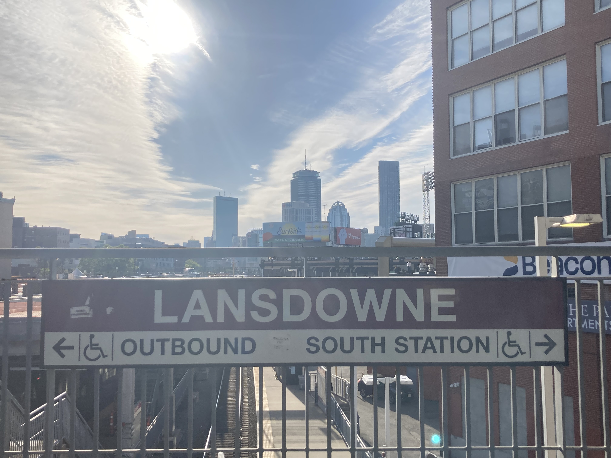
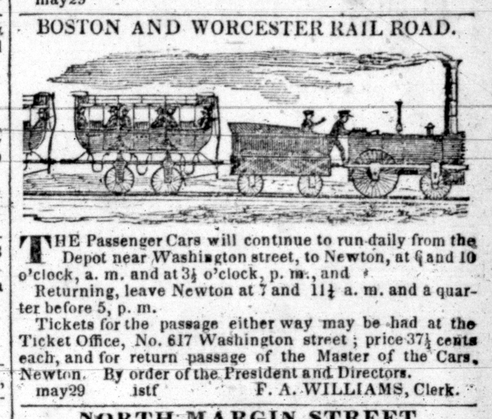
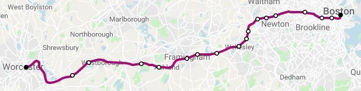
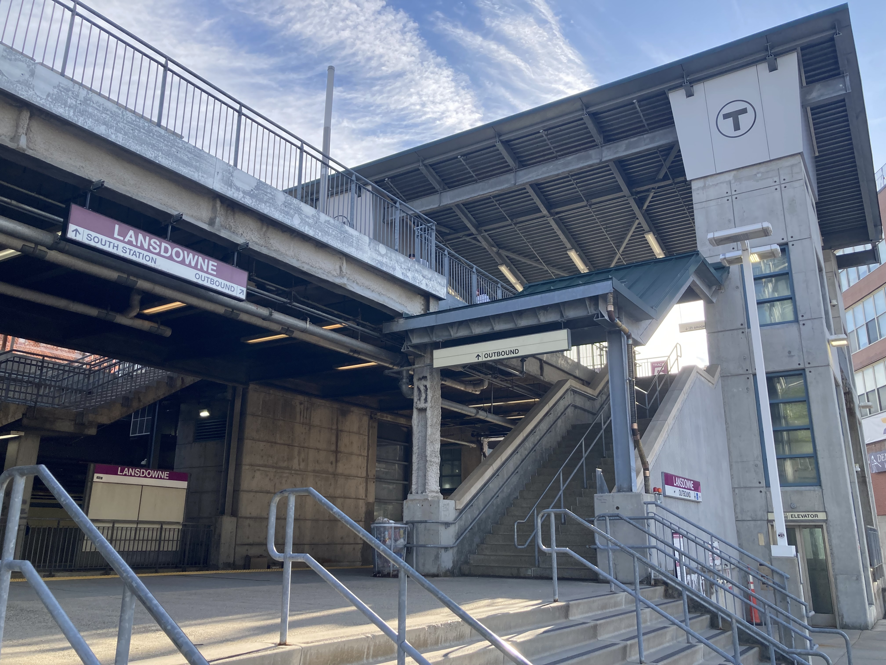
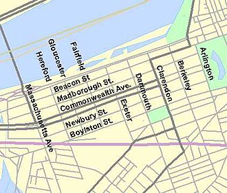
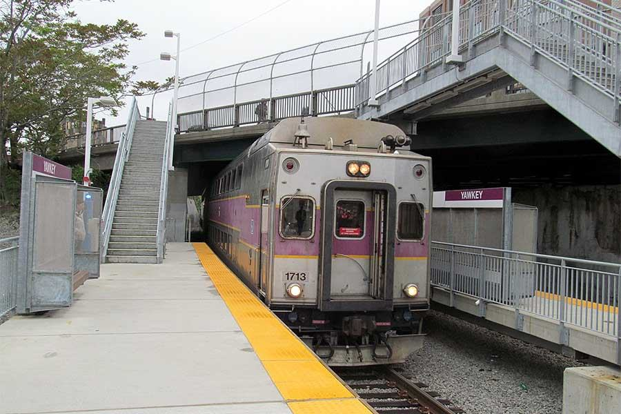
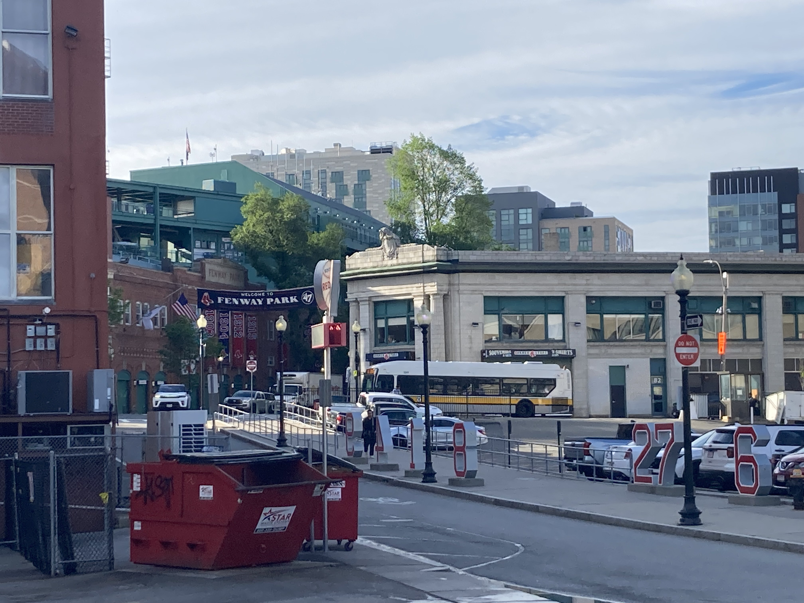
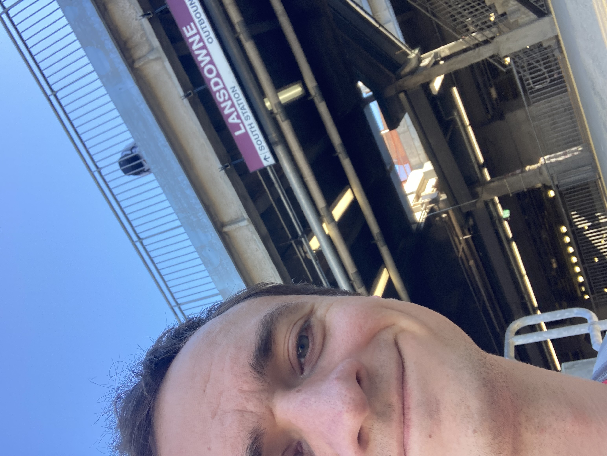

Andrew's Blog
Andrew's Blog



Let's go back in time to the year 1834. Train tracks criss-crossed the lands of these United States. Including near where I live and the precursor to the train I take to work each day, the old Boston Worcester Railroad. This stretch of track connected the two Massachusetts' cities and later became part of the Boston-Albany Railroad.

This wonderful railroad went on for over one hundred years, until the 1960s. You know what happened in the mid 20th century USA? That's right, highways. The Massachusetts Turnpike Authority bought the rights to the stretch of tracks from Newton to Boston's Back Bay. They used this right of way to build an extension for the Turnpike and reduced the rail lines to just two tracks.

Amtrak had a brief stint as owner in the early seventies before the full route became part of the Massachusetts Bay Transportation Authority (MBTA) in 1973. Service was limited on this line into Boston for a while under the MBTA. Mostly going between Framingham and Boston. Major efforts to extend and increase ridership from Worcester took place in the 90s. Infill stations (new stations built along existing tracks) were built between Framingham and Worcester around the turn of the century. Today nearly 15,000 people ride the Framingham-Worcester line everyday and I am one of them!
With all of that said, today we are talking about a different infill station along this line, Lansdowne.

People are the life blood of a city and transportation is the artery that pumps them through it. May's prompt is - Getting Around Town - Find some transportation infrastructure near you: an old train station, a highway that cut through neighborhoods, modern light rail stops, a hidden bike path, whatever seems fun! Find out why it was built. Is it still serving that same purpose today?
Lansdowne is one of the two terminus stations I visit on my daily commute. The other stop is Natick Center, but I am saving that for a future prompt. So today we are focused on my starting stop!
The Station is named after the adjacent Lansdowne street. One of my favorite Boston flâneur facts is that the names of the streets in Back Bay are alphabetically ordered and named after British gentry in hopes to invoke a sense of wealth and luxury, from Arlington to Hereford. But, much to my surprise, the alphabet goes on! All the way to "M", the Fenway neighborhood continues the pattern, Ipswich, Jersey, Kenmore, Lansdowne, and Miner. Lansdowne is our L.

If I have learned anything from my time flâneuring it is that everything has layers. So we get to use one of my favorite words once again, palimpsest! Lansdowne station was not always Lansdowne, it was originally called Yawkey Station, named for an adjacent street, Yawkey street.

The station opened in 1988 as another infill station on the Framingham-Worcester line. It originally operated exclusively for Red Sox games and provided excellent proximity to the stadium. The special game day trains were known as "Fenway Flyers" and they carried about 58,000 riders annually back in 1990.
The station became popular enough that in the turn of the millenium, that the MBTA conducted a study to open the station to a full commuter schedule to serve the nearby Boston University and Longwood Medical Area. I cannot imagine a time without this station being used for commuters, it is such a big part of my week now. It took many years for them to fully build out the stop, but in 2014 the station was fully accessible and being used for over 1,000 passengers a day (1,348 daily riders in the latest data).

Anyway, what kind of name is Yawkey?
Tom Yawkey was the owner of the Red Sox from 1933 to 1976. His legacy warranted the city naming a street after him, and then a station after the street. His legacy also warranted its renaming...
During the year 2017 there was a major national movement in the United States to remove confederate monuments and namesakes from important buildings. This extended way up North into the Union as well. In Boston, a movement was growing about a racist past with Yawkey. Specifically, he made sure the Red Sox were the last Major League Baseball team to racially integrate. In fact, when black players first joined the league, the Red Sox hosted a faux try out for several players, including Jackie Robinson, in which they had no intention of recruiting any of them. Yawkey Street reverted to Jersey Street (our J street) in 2018. Interestingly, the station, after losing its street namesake, changed to the L street Lansdowne shortly after in 2019.
That's the story of one of the train stations I go to everyday. Look forward to a future prompt when we look at the other side! I think there are some interesting mysteries waiting to be uncovered there as well.

Subscribe to the RSS Feed to see more flâneur content!